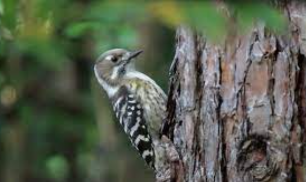

2 Svaka tica u Å¡umici
Tous les oiseaux du bosquet
(Äetrnaesta Rukovet - 14ème guirlande :01:48 - 03:35)

|
|
 Version Mokranjac |
NOTE
| ÐиÑам наÑао ниÑÐµÐ´Ð½Ñ Ð´ÑÑÐ³Ñ Ð²ÐµÑзиÑÑ Ð¾Ð²Ðµ пеÑме. | Je n'ai pas trouvé d'autre version de ce chant. |